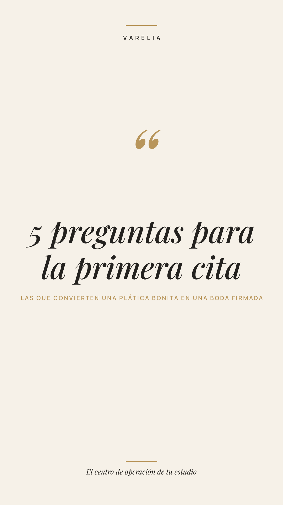

La primera cita no se gana con el portafolio.
La primera cita no se gana con el portafolio. Se gana con las preguntas.
5 que separan una plática bonita de una boda firmada:
1. "¿Cómo quieren que se sienta su boda?" (antes que fecha y presupuesto).
2. "¿Quién más decide con ustedes?"
3. "¿Qué es lo que no quieren vivir ese día?"
4. "¿Qué parte ya tienen resuelta y cuál les quita el sueño?"
5. "¿Cómo prefieren que les mande avances?"
La última es la que más planners se saltan, y la que define toda la relación.
Guárdalo para tu próxima cita. Mándaselo a otra planner que lo necesite.
Y cuando firmen, que su portal ya esté listo con tu marca: prueba Varelia 14 días gratis, sin tarjeta. Link en bio.